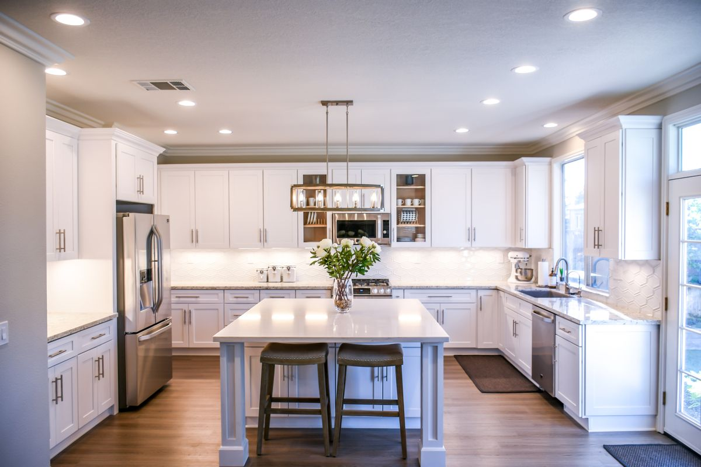

Consultative, not transactional
We place your goals and interests first, every time. The right home matters more than a quick close.
Customized strategy


Moving to the Phoenix metropolitan area? We have helped hundreds of people find the right area to call home, with team members living and working Valley-wide.
From the Biltmore and Arcadia corridors to gated Scottsdale enclaves and Paradise Valley estates, we match you to the place that fits your life, not just your search filters.

We start by listening. Your goals, timeline, and must-haves shape a customized strategy before we ever tour a home.
You see properties worth your time, including off-market opportunities through our network, not an endless feed of listings.
We negotiate the best price and terms, manage inspections and title, and guide you cleanly to the closing table.
We place your goals and interests first, every time. The right home matters more than a quick close.
337 closed transactions across 28 Valley cities, and real data behind every recommendation on price, area and timing.
We explain every step in plain language, so first-time buyers feel informed and confident throughout.
Responsive communication seven days a week, because the right home will not wait for business hours.
Buying a home starts with a conversation about your goals, budget and timeline, followed by a focused search, a well-structured offer, inspections and closing. Glasshouse Collective guides buyers through each step across Scottsdale, Paradise Valley, Phoenix, Arcadia, the East Valley and select West Valley communities, including off-market opportunities through the Compass network.
Once you have an accepted offer, closing typically takes 30 to 45 days, depending on financing, inspections and the terms of the contract. Finding the right home may take a few days or several months. Every buyer’s timeline is different, and we’ll be there to guide you from the beginning of your search through closing.
Glasshouse Collective serves buyers and sellers throughout the greater Phoenix area, with extensive experience in Scottsdale, Paradise Valley, Phoenix, Arcadia and the East Valley, as well as select West Valley communities. Wherever your search takes you, we bring local knowledge, thoughtful guidance and a strategic approach to your move.
Buying a home is about more than finding the right property. It is knowing what to look for, understanding value, structuring a strong offer and negotiating with confidence. Glasshouse Collective has represented buyers in 166 closed purchases since 2008 and brings decades of combined real estate experience, extensive knowledge of the greater Phoenix market and a strategic, hands-on approach to every purchase. We help our clients evaluate the home, the location and the terms so they can make informed decisions with confidence.
A buyer’s agent is strongly recommended in Arizona. A buyer’s agent represents your interests, negotiates price and terms, manages inspections and title, and guides you to closing. Glasshouse Collective includes a Master Certified Negotiation Expert who advocates for buyers at every stage.
Tell us what you are looking for and we will build a plan around it.
(602) 686-6662